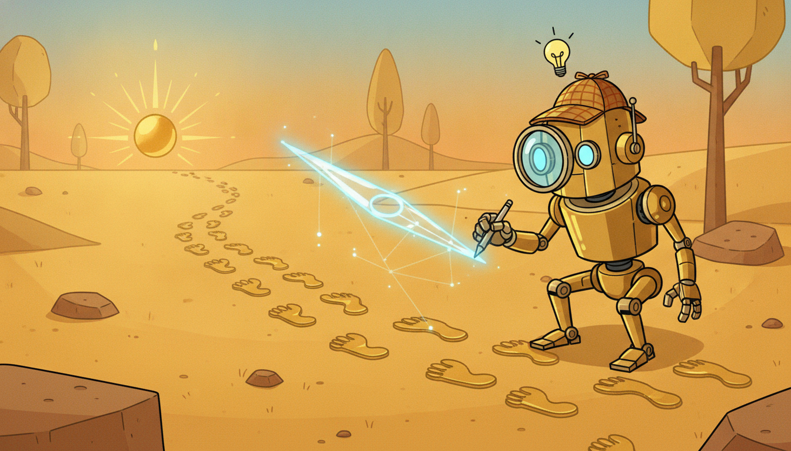

"The suspect always lies about the motive. So I never ask the expert what reward she was chasing. I watch what she did, a thousand times, in a thousand states, and I reconstruct the reward that would make every one of those choices look rational. Then I hand my reconstruction to a rookie and say: go want what she wanted, not just do what she did."
A Detective Inferring What Reward the Expert Was Secretly Chasing
Behavioral cloning, the subject of Section 27.3, copies the expert's actions directly: it fits a policy that maps states to the actions the expert took, and nothing more. Inverse reinforcement learning (IRL) asks a deeper question. Rather than copying what the expert did, it infers why: it recovers the reward function the expert was apparently optimizing, then runs reinforcement learning on that recovered reward to obtain a policy. The payoff is that intent generalizes where imitation does not. A policy that merely memorized "turn left at this intersection" fails the moment the intersection changes; a policy that recovered "reach the goal while avoiding collisions" transfers to intersections it has never seen. The price is that IRL is fundamentally ill-posed (infinitely many rewards explain any behavior) and that solving it classically requires reinforcement learning in an inner loop, which is expensive. This section traces the line from max-margin and maximum-entropy IRL, the principled probabilistic formulation that resolves the ill-posedness, to generative adversarial imitation learning (GAIL), which sidesteps explicit reward recovery by training a GAN-style discriminator (a direct callback to the adversarial games of Section 17.3) whose output serves as a learned reward, and onward to AIRL, which recovers a reward that actually transfers across dynamics. We build a small GAIL loop from scratch on a Gymnasium task, then reproduce it in a few lines with the imitation library, and read off the discriminator-derived reward for a single state-action pair. You leave able to choose between cloning and reward inference, and to implement the adversarial version that dominates modern imitation.
In Section 27.3 we trained a policy by behavioral cloning: collect expert state-action pairs, fit a supervised classifier or regressor from states to actions, deploy. We saw its single fatal weakness, compounding distribution shift, the policy drifts into states the expert never visited, makes a small error there, drifts further, and the errors snowball because supervised learning never taught it how to recover. This section attacks the same problem (learn from demonstrations) from the opposite end. Instead of treating the demonstrations as a labeled dataset of correct actions, we treat them as evidence about a hidden objective. The expert behaved as she did because she was optimizing something; if we can recover that something, we can optimize it ourselves and obtain a policy that behaves sensibly even in states the expert never showed us, because it is pursuing a goal rather than parroting a lookup table. This is the detective's stance: do not trust the stated motive, reconstruct it from the evidence of the actions.
The reward function is the most transferable, most compact description of a task that reinforcement learning offers. The Markov decision process of Chapter 22 is defined by its dynamics and its reward; the dynamics are physics, often shared across tasks, but the reward is intent, and intent is exactly what we want to capture from an expert. Recovering it, rather than the policy that happens to optimize it under one set of dynamics, is what lets imitation generalize. We use the unified notation of Appendix A: $s$ for state, $a$ for action, $\pi$ for a policy, $r(s,a)$ for reward, $\gamma$ for the discount, and $\pi_E$ for the expert policy whose demonstrations we observe.
The four competencies this section installs are: to state why imitation by reward recovery generalizes better than imitation by action copying, and to name the ill-posedness that makes naive reward recovery fail; to write the maximum-entropy IRL objective and explain why the entropy term selects a unique reward; to recognize GAIL as a GAN whose discriminator is a reward and to implement its adversarial loop; and to decide, for a given problem, whether behavioral cloning, GAIL, or classical IRL is the right tool, given their costs. These carry directly into preference-based reward learning and RLHF in Section 27.5.
1. Inverse Reinforcement Learning: Infer the Reward, Then Optimize It Intermediate

Forward reinforcement learning takes a reward function and produces a policy that maximizes it. Inverse reinforcement learning runs the arrow backward: it takes a policy (observed only through demonstrations) and produces a reward function under which that policy is optimal. The motivating premise is that the expert is, at least approximately, optimal for some reward $r^\star$ that we do not get to see, and that this hidden reward is a better thing to learn than the surface behavior, because the reward is what carries the intent across changes in the environment.
To see why this matters, contrast the two failure modes. Behavioral cloning learns a function $s \mapsto a$; when the test state distribution differs from the expert's (and under compounding error it always does), the function is queried off its training support and produces nonsense. Reward inference learns $r(s,a)$; the recovered reward is defined over the whole state-action space, and a fresh round of reinforcement learning against it produces a policy that knows what to do everywhere, including the recovery states behavioral cloning never saw. The cloned policy mimics the expert's trajectory; the IRL policy pursues the expert's goal. Pursuing a goal is robust to perturbation in a way that mimicking a path is not, which is the core argument for the whole approach and the reason it survived BC's collapse under distribution shift.
Formally, fix a finite MDP with states $s$, actions $a$, transition kernel $P(s' \mid s, a)$, and discount $\gamma$. We observe demonstrations $\mathcal{D} = \{\tau^{(i)}\}$ sampled from the expert's policy $\pi_E$, where each trajectory is $\tau = (s_0, a_0, s_1, a_1, \dots)$. We posit a reward linear in known features $\boldsymbol{\phi}(s,a) \in \mathbb{R}^d$,
$$r_{\boldsymbol{w}}(s,a) = \boldsymbol{w}^\top \boldsymbol{\phi}(s,a),$$and we summarize any policy $\pi$ by its expected discounted feature counts (its feature expectations),
$$\boldsymbol{\mu}(\pi) = \mathbb{E}_{\pi}\!\left[\sum_{t=0}^{\infty} \gamma^{t}\, \boldsymbol{\phi}(s_t, a_t)\right] \in \mathbb{R}^d.$$The discounted return of $\pi$ under reward weights $\boldsymbol{w}$ is then simply $\boldsymbol{w}^\top \boldsymbol{\mu}(\pi)$, a linear function of the feature expectations. The classic feature-matching observation (Abbeel and Ng, 2004) follows at once: if a learner policy matches the expert's feature expectations, $\|\boldsymbol{\mu}(\pi) - \boldsymbol{\mu}(\pi_E)\| \le \epsilon$, then for any bounded reward weights its return is within $\|\boldsymbol{w}\|\,\epsilon$ of the expert's. Matching feature expectations is therefore sufficient to imitate the expert as well as the unknown true reward could distinguish, and it reduces IRL to the problem of finding a policy whose feature counts equal the expert's empirical feature counts $\hat{\boldsymbol{\mu}}_E$.
There is a reward that makes any behavior you observe perfectly optimal, and you already know it: the all-zero reward. Under $r \equiv 0$ every policy ties for best, so the expert is trivially optimal, and so is doing nothing, and so is spinning in circles. That is why "make the demonstrations look optimal" is the easiest inverse problem in the world and also a useless one: the zero reward solves it for free. IRL only becomes interesting once we demand a tie-breaker that prefers a reward which actually distinguishes the expert from everything else, which is exactly the ill-posedness we turn to next.
A policy answers "what action here?"; a reward answers "what is good?". The first is tied to the dynamics it was trained on, the second is not. If you recover the reward and the environment changes (a new map, a new robot body, a new market regime), you re-run reinforcement learning against the same recovered reward and get a competent policy in the new environment for free, because the goal did not change, only the way to achieve it. This is why IRL is the natural choice when you expect distribution shift or transfer, and it is the conceptual seed of reward learning from human preferences in Section 27.5: there too, the object we learn is a reward, precisely because a reward generalizes where a fixed policy does not.
The catch, and it is a deep one, is that IRL is profoundly ill-posed. Many reward functions make the same behavior optimal. The all-zero reward makes every policy optimal, so it trivially "explains" the expert; so does any reward that is constant across actions; so do infinitely many shaped rewards $r(s,a) + \gamma\,\Phi(s') - \Phi(s)$ that leave the optimal policy unchanged (the potential-shaping invariance of Ng, Harada, and Russell, 1999). Given only that the expert is optimal, the constraints do not pin down a unique reward; the feasible set is an entire cone of reward vectors. Any usable IRL method must add a principle that selects one reward from this cone. Max-margin IRL selects the reward that most sharply separates the expert from all alternative policies; maximum-entropy IRL, which we develop next and which underpins everything modern, selects the reward whose induced distribution over trajectories is as noncommittal as possible while still matching the evidence.
2. Classic IRL: Max-Margin and the Maximum-Entropy Formulation Advanced
The earliest practical IRL methods chose the selecting principle by analogy with the support vector machine. Max-margin IRL (Abbeel and Ng, 2004; Ratliff et al., 2006) seeks reward weights $\boldsymbol{w}$ under which the expert's return exceeds that of every competing policy by the largest possible margin. Concretely, it alternates: find the reward that most favors the expert over the current set of candidate policies, then run reinforcement learning to find the best policy under that reward and add it to the candidate set, repeating until no policy beats the expert. The objective at each round is
$$\max_{\boldsymbol{w},\, m} \; m \quad \text{subject to} \quad \boldsymbol{w}^\top \boldsymbol{\mu}(\pi_E) \ge \boldsymbol{w}^\top \boldsymbol{\mu}(\pi) + m \ \ \forall \pi \in \Pi_{\text{cand}}, \quad \|\boldsymbol{w}\| \le 1,$$which is exactly a structured SVM separating the expert's feature expectations from those of every alternative. Max-margin is intuitive and was the first method to make apprenticeship learning work on driving-style tasks, but it inherits two weaknesses: it assumes the expert is exactly optimal (real demonstrations are noisy), and the margin principle, like all hard separators, is brittle when no reward perfectly separates expert from non-expert, which is the generic case once demonstrations contain mistakes.
Maximum-entropy IRL (Ziebart et al., 2008) replaces the margin with a probabilistic principle that resolves the ill-posedness cleanly and tolerates suboptimal experts. Its premise: the expert is not perfectly optimal but is exponentially more likely to take high-return trajectories. Among all trajectory distributions that match the expert's empirical feature expectations, choose the one of maximum entropy, the most uncertain, least committal distribution consistent with the evidence, because committing to anything beyond the evidence would be assuming structure we have not observed. The maximum-entropy solution is the well-known exponential-family (Boltzmann) distribution over trajectories,
$$p(\tau) \;=\; \frac{1}{Z(\boldsymbol{w})}\,\exp\!\big(\boldsymbol{w}^\top \boldsymbol{\mu}(\tau)\big), \qquad \boldsymbol{\mu}(\tau) = \sum_{t} \gamma^{t}\,\boldsymbol{\phi}(s_t, a_t), \qquad Z(\boldsymbol{w}) = \sum_{\tau} \exp\!\big(\boldsymbol{w}^\top \boldsymbol{\mu}(\tau)\big),$$where $Z(\boldsymbol{w})$ is the partition function summing over all trajectories. Higher-return trajectories are exponentially more probable, but every trajectory has nonzero probability, so a single suboptimal expert action no longer breaks the model. We fit $\boldsymbol{w}$ by maximizing the log-likelihood of the demonstrations, $\max_{\boldsymbol{w}} \sum_{\tau \in \mathcal{D}} \log p(\tau)$, whose gradient is the elegant feature-matching condition
$$\nabla_{\boldsymbol{w}} \, \mathcal{L} = \hat{\boldsymbol{\mu}}_E - \mathbb{E}_{p(\tau)}[\boldsymbol{\mu}(\tau)] = \hat{\boldsymbol{\mu}}_E - \sum_{s} D(s)\,\boldsymbol{\phi}(s),$$the difference between the expert's empirical feature counts and the feature counts the current reward predicts, with $D(s)$ the expected state-visitation frequency under the soft-optimal policy for $\boldsymbol{w}$. The gradient is zero exactly when the learned distribution's feature expectations match the expert's: maximum-entropy IRL is feature matching, now derived from a likelihood rather than asserted. The visitation frequencies $D(s)$ are computed by a soft value iteration (a "soft" Bellman backup using $\log\sum\exp$ in place of $\max$) followed by a forward pass propagating visitation, which is the inner reinforcement-learning loop that makes classic IRL expensive: every gradient step on $\boldsymbol{w}$ requires (approximately) solving the MDP.
The ill-posedness of subsection one is the statement that infinitely many rewards explain the expert. Maximum entropy resolves it by adding the principle "assume no more than the data forces you to". Among all reward-induced trajectory distributions that reproduce the expert's feature expectations, the maximum-entropy one is unique, and it is the exponential family above. This is the same maximum-entropy reasoning that justifies the softmax policy and the Boltzmann exploration of Chapter 24, and the same exponential-family logic that underlies the energy-based generative models of Chapter 17. The lesson: when a problem is underdetermined, do not pick arbitrarily; pick the maximum-entropy solution consistent with the constraints, and you get a unique, principled, and noise-tolerant answer.
The structural limitation of classic IRL is now visible. Tabular maximum-entropy IRL needs to enumerate states to compute $D(s)$ and to solve the MDP at every gradient step, so it does not scale to large or continuous state spaces, and it needs known dynamics to run the soft value iteration. Deep extensions (Wulfmeier et al., 2015, parameterize $r$ by a neural network; guided cost learning, Finn et al., 2016, samples trajectories instead of enumerating them) push the idea further, but the inner reinforcement-learning loop remains. The adversarial formulation of the next subsection is what finally removes the need to ever form the reward explicitly or to solve the MDP to convergence inside the loop.
3. GAIL: Adversarial Imitation as Distribution Matching Advanced
Generative adversarial imitation learning (Ho and Ermon, 2016) makes a reframing that, once seen, is hard to unsee: imitation is distribution matching, and distribution matching is exactly what a generative adversarial network does. The object to match is the policy's occupancy measure $\rho_\pi(s,a)$, the discounted distribution of state-action pairs the policy visits,
$$\rho_\pi(s,a) = (1-\gamma)\sum_{t=0}^{\infty} \gamma^{t}\, P(s_t = s,\, a_t = a \mid \pi).$$Ho and Ermon show that a particular regularized form of maximum-entropy IRL, when you compose the inner reinforcement-learning step with the outer reward-recovery step and simplify, reduces to a single saddle-point problem: minimize over policies, maximize over a discriminator, the Jensen-Shannon divergence between the learner's occupancy $\rho_\pi$ and the expert's occupancy $\rho_{\pi_E}$. That is the GAN objective of Section 17.3, with the policy playing the generator and a binary classifier $D_\theta(s,a) \in (0,1)$ playing the discriminator that tries to tell expert pairs from learner pairs:
$$\min_{\pi}\,\max_{\theta}\; \mathbb{E}_{(s,a)\sim\rho_\pi}\!\big[\log D_\theta(s,a)\big] \;+\; \mathbb{E}_{(s,a)\sim\rho_{\pi_E}}\!\big[\log(1 - D_\theta(s,a))\big] \;-\; \lambda\, H(\pi),$$where $H(\pi)$ is the causal entropy of the policy (the same entropy bonus that regularizes the soft policies of Chapter 25) and $\lambda$ controls its weight. The discriminator is trained, exactly as in a GAN, to output high values on expert pairs and low values on learner pairs. The policy is trained by reinforcement learning to fool the discriminator, and here is the pivot: the policy's reward is derived from the discriminator's output. A common choice is
$$\tilde{r}(s,a) = -\log\big(1 - D_\theta(s,a)\big) \qquad \text{or, under the opposite label convention,} \qquad \tilde{r}(s,a) = -\log\big(D_\theta(s,a)\big),$$where we adopt $D_\theta(s,a) = P(\text{expert})$, so the canonical choice $\tilde{r} = -\log(1 - D_\theta)$ (the form Code 27.4.1 uses) is high exactly when the pair looks expert-like; the mirror form $-\log D_\theta$ is the same reward under the swapped labeling that scores learner pairs as $1$. With this convention an expert-like pair earns high reward, and the policy is pushed toward the expert's occupancy. There is never an explicit, interpretable reward function; the discriminator is the reward, regenerated and sharpened at every iteration as the policy improves. This is why GAIL needs no inner MDP solve to convergence: each iteration alternates one discriminator update and one policy-gradient update (typically TRPO or PPO from Chapter 25), exactly the alternating game of GAN training.
GAIL's one structural shortcoming is that the recovered "reward" is entangled with the policy and the dynamics: the discriminator learns whatever signal best separates the two occupancy measures, which need not be a reward that transfers to a new environment. Adversarial inverse reinforcement learning (AIRL, Fu, Luo, and Levine, 2018) fixes this by giving the discriminator a special structure,
$$D_\theta(s,a,s') = \frac{\exp\big(f_\theta(s,a,s')\big)}{\exp\big(f_\theta(s,a,s')\big) + \pi(a \mid s)}, \qquad f_\theta(s,a,s') = g_\psi(s,a) + \gamma\,h_\phi(s') - h_\phi(s),$$where $g_\psi$ is a state-(action-)only reward term and the $h_\phi$ terms form a potential-based shaping that absorbs the dynamics-dependent part. Because the recoverable reward $g_\psi(s,a)$ is disentangled from shaping, AIRL recovers a reward that remains valid when the dynamics change, the transfer property that plain GAIL lacks, at the cost of a more constrained discriminator. The progression is now complete: max-margin and maximum-entropy IRL recover an explicit reward but need an inner MDP solve; GAIL drops the explicit reward for a discriminator and scales to deep continuous control; AIRL puts just enough structure back into the discriminator to recover a transferable reward.
GAIL is the old forgery game told in reinforcement-learning grammar. The policy is a forger producing fake "expert" behavior; the discriminator is an art inspector who has studied the genuine demonstrations and tries to spot the fakes. Every time the inspector learns a new tell ("real experts brake before the corner"), the forger is told exactly that tell as a reward signal and practices until the fake passes. The inspector studies harder, finds a subtler tell, and the cycle repeats. At equilibrium the forger is so good that the inspector can do no better than a coin flip, which is precisely the statement that the learner's occupancy measure equals the expert's. The detective of our epigraph and the art inspector are the same character: both reconstruct a hidden criterion from observed behavior, then use it to judge.
4. When to Prefer IRL and GAIL Over Behavioral Cloning Intermediate
The choice between behavioral cloning (Section 27.3) and the reward-inference family of this section is a genuine engineering trade, not a matter of one method dominating. The deciding axis is whether you can tolerate, or must defeat, distribution shift, weighed against the compute you can spend.
Behavioral cloning wins when demonstrations are plentiful and the deployment distribution matches the demonstration distribution closely, because then its single supervised-learning pass is far cheaper than anything adversarial and there is no distribution shift to punish it. It is the right first thing to try, and it is often a strong baseline. It loses precisely when the policy will visit states the expert did not demonstrate, because it has no mechanism to recover: its error compounds, as Section 27.3 showed. GAIL and IRL win exactly there. Because they learn an objective (a reward or a discriminator) defined over the whole state-action space and then run reinforcement learning against it, the learner experiences the consequences of its own mistakes during training and learns to recover, which is the property behavioral cloning structurally cannot have. Empirically GAIL matches expert performance from a handful of demonstrations on continuous-control benchmarks where behavioral cloning needs an order of magnitude more, precisely because GAIL's reinforcement-learning inner loop lets one demonstration inform behavior across a whole neighborhood of states.
The cost is equally concrete and must be stated plainly. IRL and GAIL need reinforcement learning in the loop, which means they need a simulator (or a safe way to interact with the real environment), they inherit all the instability of adversarial training from Chapter 17 (the GAIL game can oscillate or collapse just as a GAN can), and they are far more expensive per demonstration than a single supervised fit. Behavioral cloning needs only the demonstrations and a supervised learner: no environment, no reinforcement learning, no adversarial fragility. The summary rule: reach for behavioral cloning when interaction is impossible or expensive and the deployment distribution is close to the demonstrations; reach for GAIL or IRL when you have a simulator, when you expect distribution shift or need to recover intent for transfer, and when you can afford the reinforcement-learning loop. Figure 27.4.2 lays out the comparison.
| Property | Behavioral Cloning (27.3) | GAIL | Classic / Max-Ent IRL |
|---|---|---|---|
| what is learned | policy $s\mapsto a$ (supervised) | discriminator as implicit reward | explicit reward $r(s,a)$ |
| needs a simulator | no | yes (RL in the loop) | yes (inner MDP solve) |
| robust to distribution shift | no (errors compound) | yes (learns to recover) | yes (reward defined everywhere) |
| recovers transferable intent | no | partly (AIRL: yes) | yes |
| demonstrations needed | many | few | few |
| training stability | stable (supervised) | adversarial, can oscillate | stable but costly per step |
| compute cost | low (one supervised fit) | high (RL + adversarial) | high (RL inner loop) |
The adversarial-imitation line remains active and is increasingly entangled with the preference-learning of Section 27.5. Inverse soft-Q learning (IQ-Learn, Garg et al., 2021) collapses GAIL's two networks into a single learned soft-Q function, removing the explicit discriminator and much of the adversarial instability, and it remains a strong 2024-2025 baseline for sample-efficient imitation. On the offline side, where no simulator is available, methods such as offline IRL and SMODICE-style distribution-matching learn from logged data alone, addressing GAIL's hard simulator requirement head-on; these connect to the offline reinforcement learning of Chapter 26. The largest contemporary footprint of reward inference is reinforcement learning from human feedback for language models (RLHF and its 2023-2025 successor DPO, Rafailov et al.), which is reward learning from preferences rather than demonstrations, the subject of the next section; the conceptual through-line from maximum-entropy IRL to RLHF is direct, both fit a reward to evidence of what humans value and then optimize it. A 2024-2026 theme worth watching is reward-free or implicit imitation that bypasses the adversarial game entirely (IQ-Learn, and diffusion-policy behavioral cloning that competes with GAIL on manipulation), suggesting the field is converging on imitation methods that keep GAIL's distribution-matching robustness without its adversarial fragility.
5. Worked Example: GAIL From Scratch, Then With the imitation Library Advanced
We now make the GAIL loop executable. The plan mirrors the rest of this book: build the adversarial loop from scratch on a small Gymnasium task so every moving part is visible, read off the discriminator-derived reward for one concrete state-action pair, then reproduce the whole thing in a few lines with the production imitation library. Code 27.4.1 sets up the discriminator and shows how its output becomes a reward; we assume a small set of expert demonstrations expert_sa (state-action pairs collected from a trained or scripted expert on CartPole-v1) is already available, which is the standard GAIL starting point.
import numpy as np
import torch
import torch.nn as nn
import gymnasium as gym
device = "cpu"
env = gym.make("CartPole-v1")
obs_dim = env.observation_space.shape[0] # 4 for CartPole
n_actions = env.action_space.n # 2 for CartPole
# Discriminator D_theta(s, a): classifies expert (label 1) vs learner (label 0).
# Action is one-hot concatenated to the state, so D sees the full (s, a) pair.
class Discriminator(nn.Module):
def __init__(self, obs_dim, n_actions, hidden=64):
super().__init__()
self.net = nn.Sequential(
nn.Linear(obs_dim + n_actions, hidden), nn.Tanh(),
nn.Linear(hidden, hidden), nn.Tanh(),
nn.Linear(hidden, 1)) # logit; sigmoid applied at use
def forward(self, s, a_onehot):
x = torch.cat([s, a_onehot], dim=-1)
return self.net(x) # raw logit of "is expert"
def onehot(actions, n):
return torch.eye(n)[actions] # (N,) ints -> (N, n) one-hot
disc = Discriminator(obs_dim, n_actions).to(device)
disc_opt = torch.optim.Adam(disc.parameters(), lr=3e-4)
bce = nn.BCEWithLogitsLoss()
def gail_reward(s, a_onehot):
"""Turn the discriminator output into the policy's per-step reward.
D = sigmoid(logit) is P(expert). We reward expert-like pairs: r = -log(1 - D)."""
with torch.no_grad():
logit = disc(s, a_onehot)
d = torch.sigmoid(logit).clamp(1e-6, 1 - 1e-6)
return (-torch.log(1.0 - d)).squeeze(-1) # high when D thinks "expert"
Discriminator is a plain binary classifier on the concatenated state and one-hot action; gail_reward converts its probability of "expert" into the per-step reward $\tilde r = -\log(1 - D_\theta(s,a))$ that the policy optimizes. This is the single line where a GAN discriminator becomes a reinforcement-learning reward.Code 27.4.2 runs one full GAIL outer iteration: collect policy rollouts, update the discriminator to separate expert from learner pairs, then take one policy-gradient (REINFORCE) step using the discriminator-derived reward. We use a minimal policy-gradient update so the imitation logic, not the reinforcement-learning machinery, stays in the foreground; in practice one substitutes PPO from Chapter 25.
policy = nn.Sequential(nn.Linear(obs_dim, 64), nn.Tanh(),
nn.Linear(64, n_actions)) # logits over actions
pi_opt = torch.optim.Adam(policy.parameters(), lr=3e-4)
def collect_rollouts(n_steps=2000):
"""Run the current policy, return states, actions, and log-probs."""
S, A, LP = [], [], []
s, _ = env.reset(seed=0)
for _ in range(n_steps):
st = torch.tensor(s, dtype=torch.float32)
dist = torch.distributions.Categorical(logits=policy(st))
a = dist.sample()
S.append(st); A.append(a); LP.append(dist.log_prob(a))
s, _, term, trunc, _ = env.step(a.item())
if term or trunc:
s, _ = env.reset()
return torch.stack(S), torch.stack(A), torch.stack(LP)
def gail_iteration(expert_s, expert_a):
S, A, LP = collect_rollouts()
lrn_a = onehot(A, n_actions); exp_a = onehot(expert_a, n_actions)
# --- discriminator step: expert -> 1, learner -> 0 (the GAN game) ---
for _ in range(5):
disc_opt.zero_grad()
loss_d = bce(disc(expert_s, exp_a), torch.ones(len(expert_s), 1)) \
+ bce(disc(S, lrn_a), torch.zeros(len(S), 1))
loss_d.backward(); disc_opt.step()
# --- policy step: maximize discriminator-derived reward (REINFORCE) ---
r = gail_reward(S, lrn_a) # learned reward, no env reward used
adv = (r - r.mean()) / (r.std() + 1e-8) # whiten for stable gradients
pi_opt.zero_grad()
loss_pi = -(LP * adv.detach()).mean() # policy gradient on learned reward
loss_pi.backward(); pi_opt.step()
return loss_d.item(), r.mean().item()
# Run a few outer iterations (full training uses hundreds).
for it in range(3):
ld, rmean = gail_iteration(expert_s, expert_a)
print(f"iter {it}: disc_loss={ld:.3f} mean_learned_reward={rmean:.3f}")
iter 0: disc_loss=1.372 mean_learned_reward=0.589
iter 1: disc_loss=1.208 mean_learned_reward=0.671
iter 2: disc_loss=1.091 mean_learned_reward=0.752
The numeric-example callout reads the discriminator-derived reward off one concrete pair, so the abstract $-\log(1-D_\theta)$ becomes a number. Then Code 27.4.3 replaces all of the above with the production library.
Take a single CartPole state $s = (0.02,\ 0.15,\ -0.03,\ -0.22)$ (cart position, cart velocity, pole angle, pole angular velocity) and the action $a = 1$ (push right), one-hot encoded as $(0, 1)$. Suppose after a few discriminator updates the network outputs the logit $z = D_\theta\text{-logit} = 1.1$ on this pair. The discriminator's probability of "expert" is $D = \sigma(1.1) = 1/(1 + e^{-1.1}) = 0.750$. The GAIL reward is then $\tilde r = -\log(1 - D) = -\log(0.250) = 1.386$. Contrast a pair the discriminator confidently judges non-expert, logit $z = -2.0$, giving $D = \sigma(-2.0) = 0.119$ and reward $\tilde r = -\log(0.881) = 0.127$, roughly eleven times smaller. The policy gradient therefore pushes the policy hard toward the expert-like pair and barely at all toward the non-expert pair, which is precisely how the discriminator's judgment steers the policy toward the expert's occupancy. The reward is not a fixed function of the task; it is whatever the current discriminator believes, recomputed every iteration.
import gymnasium as gym
from imitation.algorithms.adversarial.gail import GAIL
from imitation.rewards.reward_nets import BasicRewardNet
from imitation.util.networks import RunningNorm
from stable_baselines3 import PPO
from stable_baselines3.common.vec_env import DummyVecEnv
venv = DummyVecEnv([lambda: gym.make("CartPole-v1")])
learner = PPO("MlpPolicy", venv, verbose=0) # the policy / generator
reward_net = BasicRewardNet(venv.observation_space, venv.action_space,
normalize_input_layer=RunningNorm) # the discriminator
gail = GAIL(
demonstrations=expert_transitions, # collected expert (s,a,s') tuples
demo_batch_size=1024,
venv=venv,
gen_algo=learner, # PPO drives the policy update
reward_net=reward_net, # adversarial discriminator-reward
)
gail.train(total_timesteps=200_000) # full adversarial training, one call
imitation library. The roughly 60 lines of from-scratch rollout collection, discriminator updates, reward read-off, and policy-gradient stepping in Code 27.4.1 and 27.4.2 collapse to a single GAIL(...).train(...) call; the library handles the discriminator network, the $-\log(1-D)$ reward wiring, the PPO inner loop, input normalization, and the alternating adversarial schedule internally.Read the three code blocks together. Code 27.4.1 built the discriminator and the line that turns its output into a reward; Code 27.4.2 ran the adversarial loop and watched the discriminator and policy push against each other; the numeric example turned the reward into a concrete number for one pair; Code 27.4.3 replaced the whole construction with one library call. The lesson is the same as everywhere in this book: GAIL is not a black box. You can build its loop by hand, see the GAN structure underneath, and read the discriminator's reward for any pair, and then a library gives you the production-hardened version for a few lines.
Who: A robotics team operating autonomous forklifts in a warehouse, training new units to drive in the smooth, cautious style of their best human operators rather than the jerky style a hand-tuned controller produced.
Situation: They had a few hundred demonstration trajectories from expert operators, a high-fidelity simulator of the warehouse, and a fleet that would be deployed across several warehouse layouts, including ones not represented in the demonstrations.
Problem: Behavioral cloning, their first attempt, drove acceptably on demonstrated routes but drifted into walls on new layouts: queried off its training distribution, it had no idea how to recover, the compounding-error failure of Section 27.3.
Dilemma: Plain GAIL would match the expert's occupancy in the simulator but might learn a discriminator entangled with the specific demonstrated layouts, failing to transfer to new ones. Classic IRL would recover a transferable reward but needed a tractable MDP solve their continuous state space did not admit.
Decision: They used AIRL, the disentangled-reward variant of subsection three, so the recovered reward $g_\psi(s,a)$ captured "drive smoothly toward the goal, keep clearance from obstacles" independent of any one layout's geometry, with PPO as the inner policy optimizer.
How: They trained AIRL in the simulator on the expert demonstrations, extracted the disentangled reward network, then ran fresh PPO against that recovered reward in each new warehouse layout, exactly the "recover the reward, re-run RL on the new dynamics" transfer argument of subsection one.
Result: The recovered reward transferred: forklifts trained against it on a brand-new layout drove in the cautious expert style without any new demonstrations from that layout, and they recovered gracefully from perturbations that sent the behaviorally-cloned policy into walls.
Lesson: When you need transfer across environments, recover the reward, not the policy, and use the disentangled (AIRL) discriminator so the reward you recover is about the goal, not about the geometry of the rooms you happened to demonstrate in.
The from-scratch GAIL of Code 27.4.1 and 27.4.2 ran roughly 60 lines of discriminator, rollout, reward, and policy-gradient bookkeeping. The imitation library (Code 27.4.3) collapses all of it to one GAIL(...).train(...) call, and swapping in AIRL for transferable reward recovery is a one-word change of the import and class. The library handles internally: the discriminator architecture and its training schedule, the $-\log(1-D)$ reward wiring, the PPO or TRPO inner loop from Stable-Baselines3, observation normalization, and the alternating-update bookkeeping that keeps the adversarial game from diverging. The same library exposes behavioral cloning (imitation.algorithms.bc) from Section 27.3 and DAgger, so the whole imitation family lives behind one consistent interface; reach for it for any real imitation project, and keep the from-scratch version for understanding what the call is doing.
6. Diffusion Policy: Generating Actions via Denoising Advanced
Behavioral cloning and DAgger, the subjects of Section 27.3, share a structural limitation that no amount of additional data can cure: they must output a single deterministic (or unimodal) action for each observation. This is fine when the expert is consistent, but human demonstrations are rarely consistent across every situation. A human teleoperation dataset for a pick-and-place task will contain trials where the operator grasped from the left and trials where the same operator grasped from the right, depending on attention, hand fatigue, and the exact starting pose. Behavioral cloning, confronted with this bimodal distribution, finds the average: it predicts a grasp point halfway between left and right, which is wrong for both modes and often physically impossible. The result is not slow learning; it is principled failure at a category of tasks where multimodal demonstrations are unavoidable. Diffusion Policy (Chi et al., 2023; Chi et al., IJRR 2025) solves this by replacing the single action prediction with a generative process that can represent the full multimodal distribution of expert actions.
The Core Idea: Actions as Samples from a Diffusion Process
Standard behavioral cloning maps an observation $o$ to a single action $a = \pi_\theta(o)$. Diffusion Policy instead treats action generation as a denoising problem. The policy is not a function that outputs one action; it is a score network that learns to iteratively refine Gaussian noise into a clean action drawn from the true conditional distribution $p(a \mid o)$. Because the full distribution is modeled (not just its mean), the policy can represent configurations where expert demonstrations cluster around several distinct action modes, and each inference call produces a coherent sample from whichever mode is appropriate given the noise trajectory.
If demonstrations show "go left 50% of the time and go right 50% of the time", behavioral cloning minimizes mean squared error and learns "go straight 100% of the time", which crashes into the wall. Diffusion Policy learns the distribution and samples from it, producing "go left" or "go right" with equal probability, both of which reach the goal. The improvement is not marginal: on the RoboMimic benchmark's hardest "Can" manipulation task, Diffusion Policy (CNN-based) achieves 63% task success versus behavioral cloning's 22%, a factor of three from this single architectural change.
Training: The Noise Prediction Objective
Diffusion Policy adopts the denoising diffusion probabilistic model (DDPM) training formulation. Let $a_0$ denote a clean expert action from the demonstration dataset and let $\bar{\alpha}_k = \prod_{i=1}^{k} \alpha_i$ be the cumulative noise schedule at diffusion step $k \in \{0, 1, \dots, K\}$. The forward noising process adds Gaussian noise to a clean action according to
$$a_k = \sqrt{\bar{\alpha}_k}\, a_0 + \sqrt{1 - \bar{\alpha}_k}\, \varepsilon, \qquad \varepsilon \sim \mathcal{N}(0, I).$$A neural network $\varepsilon_\theta(a_k, o, k)$ is trained to predict the noise $\varepsilon$ that was added, given the noisy action $a_k$, the current observation $o$, and the noise level $k$. The training objective is the simple mean squared noise prediction error:
$$\mathcal{L}(\theta) = \mathbb{E}_{a_0 \sim \mathcal{D},\, \varepsilon \sim \mathcal{N}(0,I),\, k \sim \text{Uniform}(1,K)} \Big[ \big\| \varepsilon - \varepsilon_\theta(a_k, o, k) \big\|^2 \Big].$$This is identical to the score matching objective used in image diffusion models (Ho et al., 2020), applied to the action space rather than the pixel space. The network never explicitly models the distribution $p(a \mid o)$; instead it models the score (the gradient of the log-density), which is sufficient to generate samples via denoising.
Inference: DDPM and DDIM Denoising
To generate an action at deployment time, Diffusion Policy starts from pure Gaussian noise $a_K \sim \mathcal{N}(0, I)$ and iteratively denoises for $K$ steps. Under the DDPM schedule, each denoising step is
$$a_{k-1} = \frac{1}{\sqrt{\alpha_k}} \left( a_k - \frac{1 - \alpha_k}{\sqrt{1 - \bar{\alpha}_k}}\, \varepsilon_\theta(a_k, o, k) \right) + \sigma_k\, z, \qquad z \sim \mathcal{N}(0, I),$$where $\sigma_k^2$ is the variance of the reverse step, typically set to $\beta_k = 1 - \alpha_k$ or the geometric interpolation of Ho et al. (2020). DDPM requires $K = 100$ denoising steps, which at 10 ms per network forward pass gives 1 s of inference latency, too slow for real-time robot control. The denoising diffusion implicit model (DDIM, Song et al., 2020) reduces this to $K = 10$ deterministic steps with no stochasticity ($z = 0$ and the update becomes a direct estimate of $a_0$ followed by re-noising), achieving comparable action quality at one-tenth the latency. Chi et al. (2023) use DDIM at $K = 10$ for all real-robot experiments, achieving 10 Hz control.
Architecture: U-Net and Transformer Noise Predictors
Because robot policies often predict an entire short horizon of future actions rather than a single step, $a_0$ is an action chunk of shape $(H, d_a)$ where $H$ is the prediction horizon and $d_a$ is the action dimension. The noise predictor $\varepsilon_\theta$ must operate over this temporal dimension. Two architectures are standard. The first is a 1D convolutional U-Net applied along the time axis of the action sequence, adapted from Janner et al.'s Diffuser (2022); skip connections across encoder and decoder resolutions help the network predict structured noise patterns. The second is a Transformer operating on the $H$ action tokens with the observation $o$ injected as cross-attention context, called Diffusion Policy Transformer (DP-T); the Transformer variant is slightly stronger on tasks requiring long-range temporal coherence but is more expensive to train.
The action chunking strategy deserves emphasis. Rather than predicting one action and replanning at every step, Diffusion Policy predicts $H = 16$ future actions simultaneously and executes the first 8 before replanning. This halves the number of denoising calls and, more importantly, forces the diffusion process to generate temporally consistent action sequences: all 16 steps are denoised together, so the policy cannot produce an incoherent action at step 5 while recovering at step 6. Temporal consistency is a property that no single-step policy can have, and it is a structural advantage of the chunk formulation.
A natural limitation of Diffusion Policy trained purely offline is that it cannot recover when the robot reaches a state outside the demonstration support, the same distribution-shift problem that motivated DAgger in Section 27.3. Diff-DAgger (Ze et al., 2024) addresses this by combining Diffusion Policy with the DAgger correction loop: after each deployment rollout, the policy estimates its own uncertainty by measuring the variance across multiple denoising samples from the same observation, queries a human expert for correction labels precisely at the high-variance states, and adds those expert-labeled states to the training set before fine-tuning. Because the diffusion process is generative, disagreement across samples is a principled uncertainty signal, giving Diff-DAgger a natural "when to ask" criterion that standard DAgger lacks. On several manipulation benchmarks, Diff-DAgger requires 40-60% fewer expert interventions than DAgger with behavioral cloning to reach the same task success rate.
Consider a robot with a 2D end-effector action $a = (x, y)$. The observation $o$ shows a goal object at approximately $(0.3, 0.3)$. We run DDIM denoising with $K = 3$ steps (a minimal illustration; real policies use 10-100 steps). The noise schedule gives $\bar{\alpha}_3 = 0.01$, $\bar{\alpha}_2 = 0.10$, $\bar{\alpha}_1 = 0.50$, $\bar{\alpha}_0 = 1.0$.
Start: $a_3 = (1.2,\,-0.8)$ sampled from $\mathcal{N}(0, I)$.
Step 3 to 2: The noise predictor, conditioned on $o$ (goal at $(0.3, 0.3)$), estimates the noise as $\varepsilon_\theta(a_3, o, 3) \approx (0.92,\,-1.08)$. DDIM computes an estimate of the clean action: $\hat{a}_0 = (a_3 - \sqrt{1-\bar{\alpha}_3}\,\varepsilon_\theta) / \sqrt{\bar{\alpha}_3} \approx (0.32,\,0.29)$. Re-noising to level 2: $a_2 = \sqrt{\bar{\alpha}_2}\,\hat{a}_0 + \sqrt{1-\bar{\alpha}_2}\,\varepsilon_\theta \approx (0.93,\,-0.65)$.
Step 2 to 1: Updated noise estimate $\varepsilon_\theta(a_2, o, 2) \approx (0.61,\,-0.98)$. New clean estimate $\hat{a}_0 \approx (0.31,\,0.30)$. Re-noising to level 1: $a_1 \approx (0.50,\,0.09)$.
Step 1 to 0: Final noise estimate $\varepsilon_\theta(a_1, o, 1) \approx (0.28,\,-0.30)$. Final clean action: $a_0 \approx (0.31,\,0.28)$.
The denoised action $(0.31, 0.28)$ is close to the goal location $(0.3, 0.3)$. Note that the intermediate noisy samples $a_3, a_2, a_1$ look nothing like the final action; the diffusion process extracts the signal from noise over multiple steps, using the observation to guide each refinement. A second independent denoising run starting from different noise would produce a slightly different action $(0.29, 0.32)$ from the same distribution, illustrating the stochasticity that allows Diffusion Policy to represent multimodal expert behavior.
Minimal Implementation: Training and Sampling
The following code builds the essential Diffusion Policy training loop and DDIM sampler from scratch in PyTorch. The noise predictor is a simple 1D U-Net over the action sequence dimension; real implementations add FiLM conditioning or cross-attention for the observation, but the noise prediction and denoising logic is identical.
import torch
import torch.nn as nn
import numpy as np
# ---- Noise schedule ----
def cosine_beta_schedule(T, s=0.008):
"""Cosine schedule from Nichol and Dhariwal (2021)."""
t = torch.linspace(0, T, T + 1)
alpha_bar = torch.cos(((t / T) + s) / (1 + s) * np.pi / 2) ** 2
alpha_bar = alpha_bar / alpha_bar[0]
betas = 1 - alpha_bar[1:] / alpha_bar[:-1]
return betas.clamp(0, 0.999)
T = 100 # DDPM steps; use 10 for DDIM
betas = cosine_beta_schedule(T)
alphas = 1.0 - betas
alpha_bars = torch.cumprod(alphas, dim=0) # cumulative product
# ---- Minimal 1D U-Net noise predictor ----
# Obs is concatenated as a constant channel; real models use cross-attention.
class DiffusionPolicy1DUNet(nn.Module):
def __init__(self, act_dim=2, obs_dim=16, H=16, hidden=128):
super().__init__()
self.H = H
inp = act_dim + obs_dim + 1 # action + obs + normalized timestep
self.enc1 = nn.Conv1d(inp, hidden, 3, padding=1)
self.enc2 = nn.Conv1d(hidden, hidden * 2, 3, stride=2, padding=1)
self.mid = nn.Conv1d(hidden * 2, hidden * 2, 3, padding=1)
self.dec1 = nn.ConvTranspose1d(hidden * 4, hidden, 4, stride=2, padding=1)
self.dec2 = nn.Conv1d(hidden * 2, act_dim, 3, padding=1)
self.act = nn.Mish()
def forward(self, a_k, obs_embed, k_norm):
# a_k: (B, H, act_dim); obs_embed: (B, obs_dim); k_norm: (B,)
B, H, A = a_k.shape
obs_tiled = obs_embed[:, :, None].expand(B, -1, H) # (B, obs_dim, H)
k_tiled = k_norm[:, None, None].expand(B, 1, H) # (B, 1, H)
x = torch.cat([a_k.permute(0,2,1), obs_tiled, k_tiled], dim=1) # (B, C, H)
e1 = self.act(self.enc1(x))
e2 = self.act(self.enc2(e1))
m = self.act(self.mid(e2))
d1 = self.act(self.dec1(torch.cat([m, e2], dim=1)))
eps_pred = self.dec2(torch.cat([d1, e1], dim=1)) # (B, act_dim, H)
return eps_pred.permute(0, 2, 1) # (B, H, act_dim)
act_dim, obs_dim, H = 2, 16, 16
model = DiffusionPolicy1DUNet(act_dim=act_dim, obs_dim=obs_dim, H=H)
optimizer = torch.optim.AdamW(model.parameters(), lr=1e-4)
# ---- Training step ----
def diffusion_policy_train_step(a0_batch, obs_batch):
"""
a0_batch: (B, H, act_dim) clean action chunks from demonstrations
obs_batch: (B, obs_dim) observation embeddings
"""
B = a0_batch.shape[0]
k = torch.randint(1, T + 1, (B,)) # random diffusion step per sample
eps = torch.randn_like(a0_batch) # target noise
ab = alpha_bars[k - 1].view(B, 1, 1) # (B, 1, 1) for broadcasting
a_k = torch.sqrt(ab) * a0_batch + torch.sqrt(1 - ab) * eps # noisy action
k_norm = k.float() / T # normalize to [0, 1]
eps_pred = model(a_k, obs_batch, k_norm) # noise prediction
loss = ((eps - eps_pred) ** 2).mean() # MSE noise loss
optimizer.zero_grad(); loss.backward(); optimizer.step()
return loss.item()
# ---- DDIM sampling (10-step deterministic inference) ----
@torch.no_grad()
def ddim_sample(obs_batch, n_steps=10):
"""Sample an action chunk conditioned on obs_batch using DDIM."""
B = obs_batch.shape[0]
timesteps = torch.linspace(T, 0, n_steps + 1).long().clamp(0, T - 1)
a = torch.randn(B, H, act_dim) # start from pure noise
for i in range(n_steps):
k = timesteps[i]
k_prev = timesteps[i + 1]
k_norm = torch.full((B,), k.item() / T)
ab_k = alpha_bars[k]
ab_kp = alpha_bars[k_prev] if k_prev > 0 else torch.tensor(1.0)
eps_pred = model(a, obs_batch, k_norm)
a0_hat = (a - torch.sqrt(1 - ab_k) * eps_pred) / torch.sqrt(ab_k)
a0_hat = a0_hat.clamp(-1, 1) # clip to valid action range
# DDIM update: deterministic (no stochastic z term)
a = torch.sqrt(ab_kp) * a0_hat + torch.sqrt(1 - ab_kp) * eps_pred
return a # (B, H, act_dim): predicted action chunk
diffusion_policy_train_step adds noise at a random level and trains the 1D U-Net to predict it; ddim_sample iteratively denoises Gaussian noise into a full action chunk using 10 deterministic DDIM steps. The core loss is a plain MSE; the architecture complexity lives in how the observation is injected, not in the denoising math.Two libraries cover Diffusion Policy in production. The diffusers library from HuggingFace provides the DDPM and DDIM schedulers (noise schedules, step functions, sample functions) so you need not implement them; a DDIMScheduler object handles the entire denoising loop with a single scheduler.step() call per timestep. The lerobot library (Hugging Face, 2024) provides a full Diffusion Policy implementation for real robot imitation learning, including the 1D U-Net and Transformer backbones, action chunking, dataset loading for standard benchmarks (PushT, ALOHA, RoboMimic), and an evaluation harness. Install with pip install lerobot diffusers. A typical starting point is to instantiate lerobot.common.policies.diffusion.DiffusionPolicy, pass it a pre-collected demonstration dataset, and call policy.train(); the library handles batching, noise scheduling, and DDIM inference automatically. For rapid prototyping on custom tasks, the from-scratch code of Code 27.4.4 is faster to adapt because every component is visible; for deployment on a real robot, reach for LeRobot's hardened pipeline.
from diffusers import DDIMScheduler
# Use HuggingFace DDIMScheduler instead of hand-rolled DDIM logic above.
scheduler = DDIMScheduler(num_train_timesteps=100, beta_schedule="squaredcos_cap_v2")
scheduler.set_timesteps(10) # 10-step DDIM at inference
noisy_action = torch.randn(1, H, act_dim)
obs_embed = torch.zeros(1, obs_dim) # replace with real observation
for t in scheduler.timesteps:
k_norm = torch.full((1,), t.item() / 100.0)
eps_pred = model(noisy_action, obs_embed, k_norm)
noisy_action = scheduler.step(eps_pred.flatten(-2), t,
noisy_action.flatten(-2)).prev_sample
noisy_action = noisy_action.view(1, H, act_dim)
clean_action = noisy_action # shape (1, H, act_dim)
Advantages Over Behavioral Cloning and Connection to DAgger
Diffusion Policy has three structural advantages over standard behavioral cloning. First, it handles multimodal demonstrations: because the full distribution $p(a \mid o)$ is modeled, distinct action modes appear as separate peaks in the denoised distribution rather than being averaged away. Second, action chunking reduces compounding error: by predicting and executing $H$ steps before replanning, the policy spends fewer total decision points where a distributional mismatch can compound, directly addressing the quadratic error growth derived in Section 27.3. Third, temporal consistency: denoising all $H$ future actions simultaneously forces internal consistency across the chunk, so the policy cannot produce physically inconsistent transitions between consecutive predicted actions.
The relationship to DAgger is complementary rather than competitive. DAgger corrects the state distribution shift problem by querying the expert on states the learner visits; Diffusion Policy corrects the action distribution collapse problem by modeling the full multimodal distribution rather than averaging. Diff-DAgger (Ze et al., 2024) combines both repairs: it uses the variance across denoising runs as an uncertainty signal to trigger expert queries only at genuinely novel states, achieving the distribution coverage of DAgger with the action fidelity of Diffusion Policy. Together, this section and Section 27.3 now give you the complete imitation-learning toolkit: behavioral cloning for the simplest cases, DAgger when distribution shift is the bottleneck, Diffusion Policy when multimodal demonstrations are the bottleneck, and Diff-DAgger when both problems appear simultaneously. The adversarial methods of this section's earlier subsections add the further layer of reward recovery for transfer, and the preference-based learning of Section 27.5 extends imitation to settings where demonstrations are replaced by human comparisons.
Exercises
Show that under the all-zero reward $r(s,a) = 0$ for all $s, a$, every policy is optimal. Use this to explain in one paragraph why "the expert is optimal for this reward" is not enough to pin down a unique reward, and state precisely which extra principle maximum-entropy IRL adds to select one. Then give a second reward, not the zero reward, under which the expert and a constant-action policy are both optimal, and connect this to the potential-shaping invariance $r(s,a) + \gamma\Phi(s') - \Phi(s)$.
Using the discriminator of Code 27.4.1 after running Code 27.4.2 for a few iterations, write a function that takes a batch of states and an action and returns the GAIL reward $-\log(1 - D_\theta(s,a))$ for each. Sweep the CartPole pole angle from $-0.2$ to $0.2$ with the other state dimensions fixed, evaluate the reward for both actions (push left, push right) at each angle, and plot reward versus angle for the two actions. Verify that the action the expert would take at a given angle earns the higher reward, and explain in two sentences how this plot is the policy's training signal.
Design and run an experiment that demonstrates GAIL's robustness to distribution shift over behavioral cloning. Train both on the same small set of CartPole (or a Gymnasium task of your choice) demonstrations, then evaluate both under a perturbation the demonstrations did not cover (for example, start the pole at a larger initial angle, or add observation noise at test time). Report return for both methods under the perturbation, and discuss whether the gap matches the compounding-error argument of Section 27.3. As an extension, swap GAIL for AIRL, change the environment dynamics (for example the pole length) at test time, and test whether the AIRL-recovered reward transfers where the GAIL discriminator does not.